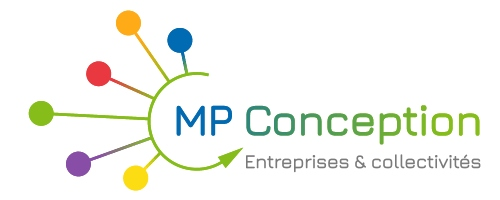
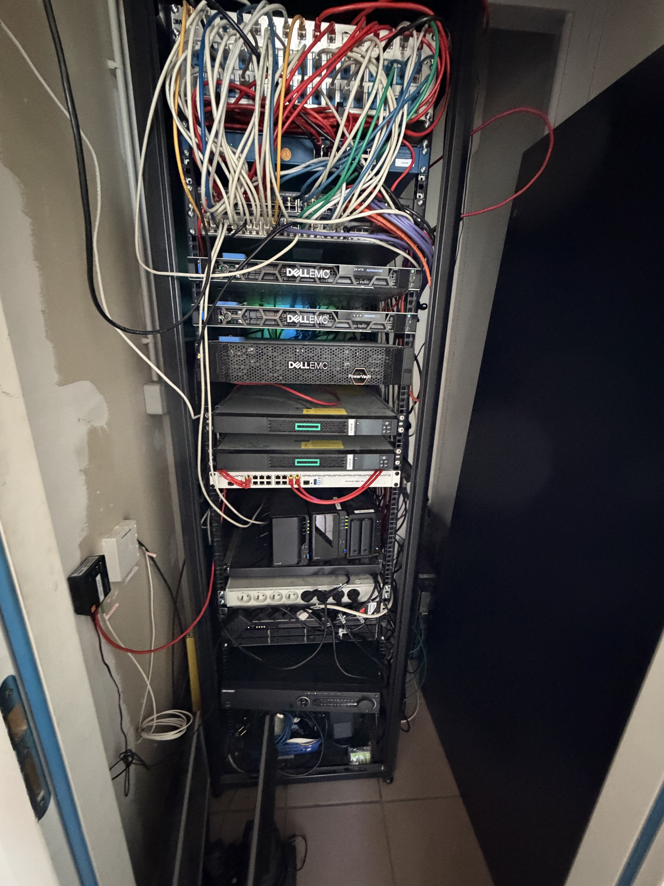
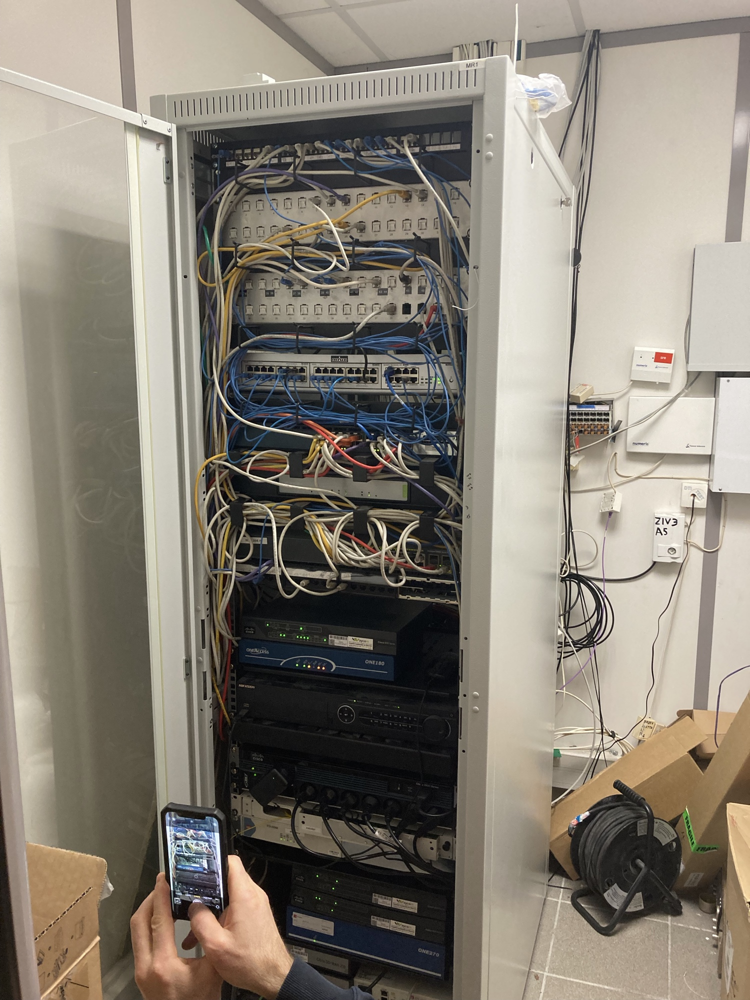
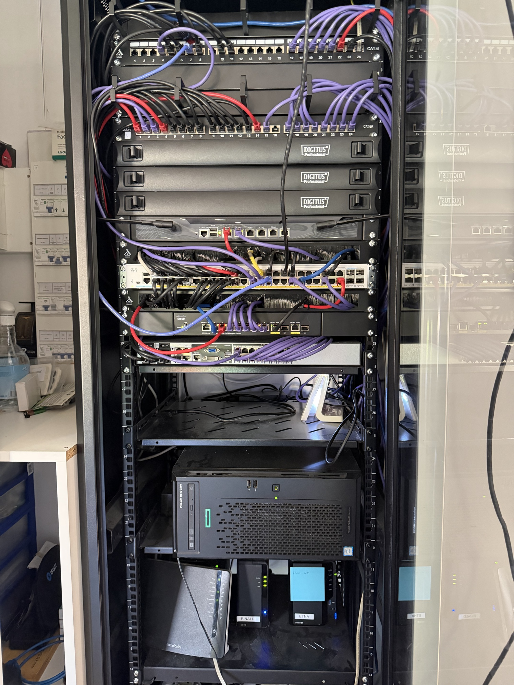
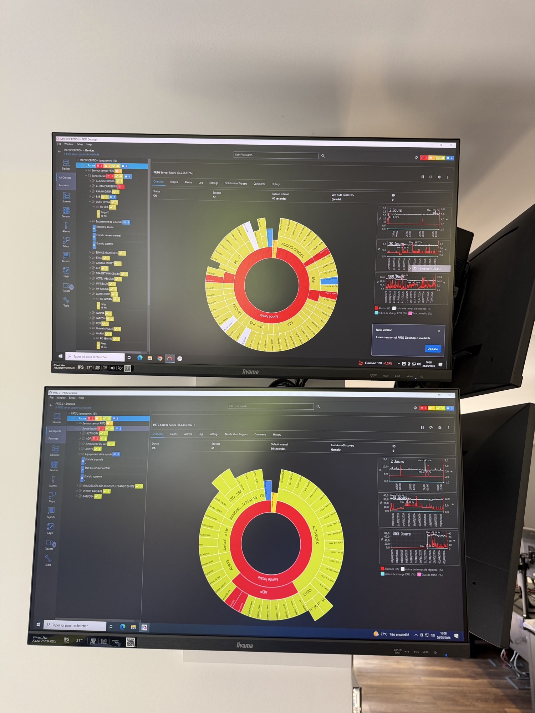

MP Conception SAS — Oyonnax (01)

MP Conception SAS est un prestataire informatique basé à Oyonnax, dans l'Ain. L'entreprise existe depuis 2009 et propose des solutions informatiques globales pour les PME et PMI : infogérance, réseaux, sauvegardes, téléphonie d'entreprise et virtualisation. C'est aussi là que j'ai fait toute ma scolarité en alternance : la 1ère et la terminale bac pro SN, et maintenant le BTS SIO option SISR — toujours à la SEPR Lyon.
En tant que prestataire informatique, MP Conception intervient directement chez ses clients pour gérer leur parc informatique et leur infrastructure. Chaque client a sa config, ses problèmes, ses contraintes — c'est ce qui rend le travail varié.
Entreprise
MP Conception SAS
Prestataire informatique
Localisation
Oyonnax — Ain (01)
453 Rue Edouard Herriot
Alternance
Depuis septembre 2024
BTS SIO 2ème année — option SISR
Dirigeant
Pierre Montagnac
Fondateur — depuis 2009
J'interviens sur les missions clients aux côtés des techniciens de l'entreprise. Les tâches varient beaucoup selon les clients et les semaines.
L'infrastructure interne de MP Conception est hébergée sur site. Elle comprend un serveur physique TrueNAS pour le stockage, deux contrôleurs de domaine Windows Server sous Proxmox, un firewall pfSense, et plusieurs services de supervision et de gestion de parc.

Baie serveurs Dell EMC — câblage réseau et brassage

Baie réseau chez un client — intervention sur site

Baie réseau du bureau — panneaux de brassage CAT6/CAT6A Digitus, switchs Cisco, serveur HP ProLiant
PRTG Network Monitor est utilisé pour surveiller les infrastructures des clients en temps réel. L'outil remonte les alertes sur les équipements, les services et la connectivité. Depuis le tableau de bord, on a une vue globale sur l'état de tous les clients supervisés.

Poste de supervision — 2 écrans avec le dashboard PRTG, vue en temps réel des clients